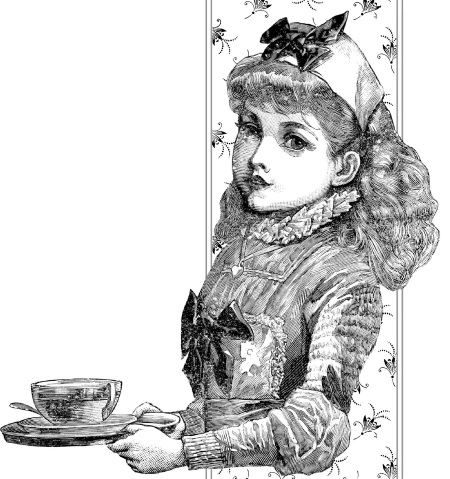

Кратко о технологии изготовления шоколада и его химическом составе .

Как же получают это удивительное лакомство? Для производства шоколада используются семена вечнозеленого дерева какао, происходящего из субэкваториальных районов Америки. Растение, научное название которого – Theobroma cacao, относится к семейству стеркулевых, широко распространено в тропиках.
Сегодня какао, называемое в нашей стране шоколадным деревом, выращивают и на других континентах. Но в диком виде его можно встретить на побережье Мексики, в Центральной и Южной Америке. Высота дерева зависит от места произрастания и колеблется от 10 до 20 метров. При культурном возделывании высоту регулируют путем обрезки и она редко достигает 7 метров. Листья какао тонкие, продолговато-эллиптические, длиной до 30 сантиметров, цветки небольшие, восковидные, розовато-белые, появляются на поверхности ствола и крупных ветвей. Плод, созревание которого продолжается четыре месяца, у какао небольшой, а его длина колеблется в пределах 20–38 сантиметров. По внешнему виду он напоминает большой огурец или маленькую дыню, с кожистой, слегка одеревеневшей оболочкой красного, красновато-бурого, зеленого или желтого цвета, меняющегося в процессе созревания. В одном плоде какао находится от 20 до 50 бобов, погруженных в вязкую, липкую жидкость, твердеющую на открытом воздухе. Отдельное семя (боб) покрыто маслянистой кожурой.
По месту произрастания какао-бобы разделяют на американские, африканские и азиатские, а крупнейшими экспортерами какао-бобов являются такие страны, как Кот-д’Ивуар, Венесуэла, Индонезия, Гана, Камерун, Бразилия и Эквадор.
Самым лучшим принято считать группу сортов «Криолло», характеризующихся мягким вкусом. Его разводят в Венесуэле, Коста-Рике и Никарагуа. Сорта группы «Форастеро» наиболее распространены среди производителей и экспортеров, а группа какао-бобов сорта «Ка-лабасильо» самая дешевая из всех, но при этом и самая низкокачественная.
Для производства шоколада используют какао-бобы всех трех сортов. Со стволов дерева их срезают большими, длинными ножами (мачете) и собирают в корзины. Затем урожай сваливают в кучи, и плоды разрезают на несколько частей. Следующий этап заключается в отделении какао-бобов от мякоти – опытный резчик в течение одного часа вскрывает до пятисот плодов шоколадного дерева. Какао-бобы раскладывают на поддонах и оставляют на несколько дней для фермантации – под действием природных дрожжей и ферментов они темнеют и приобретают яркий шоколадный запах и вкус. В завершение процесса плоды сушат на солнце и жарят, удаляя шелуху, сортируют и упаковывают для дальнейшей переработки.
На следующем этапе какао-бобы перемалывают до получения пастообразной массы, называемой какао тертое. Интересно, что жиры, входящие в состав какао-бобов, при нагревании плавятся и после измельчения какао тертое получается в жидком виде, но густеет и затвердевает в процессе охлаждения. Теперь продукт пригоден для производства шоколада, а также использования в косметических и фармакологических изделиях. Самый ценный продукт, получаемый путем прессования какао тертого, – это какао-масло. Оно не только входит в число обязательных ингредиентов шоколада, но используется для приготовления мазей в косметике. Именно какао-масло придает шоколаду его неповторимый вкус. Но оно имеет и некоторые уникальные свойства, так как состоит из трех типов жиров. Один из них идентичен жиру оливкового масла. Второй относится к типу так называемых насыщенных жиров, превращаемых в печени в жир, похожий на жир оливкового масла. Третий вид жира помогает укрепить клеточные мембраны нашего организма. Все это говорит о том, что жир, содержащийся в какао-масле, не вреден для человека.
Сухой остаток, полученный при приготовлении какао-масла, перемалывают, и получается известный всем какао-порошок, используемый в кондитерском производстве и для приготовления напитка какао.
В какао-бобах шоколадного дерева содержится до 300 различных полезных веществ. Примерный химический состав какао-боба следующий: жиры составляют 54 %, белки – 11,5 %, целлюлоза – 9 %, крахмал и полисахариды – 7,5 %, танин – 6 %, вода – 5 %, минеральные вещества и соли – 2,6 %, органические кислоты – 2 %, сахариды – 1 % и кофеин – 0,2 %. В числе веществ, содержащихся в какао-бобах, можно отметить: анандамид, аргинин, дофамин, эпикатехин, гистамин, кокохил, серотонин, триптофан, тирамин, фенилэтиламин, полифенол, салсолинол, магний.
В многочисленных исследованиях отмечается, что жиры, содержащиеся в какао-бобах, относятся к так называемым насыщенным жирам, но при этом не оказывают на организм человека вредного влияния – шоколад не повышает уровень холестерина в крови. Состав какао-бобов таков, что входящие в него элементы органично дополняют друг друга. Например, хром участвует в расщеплении глюкозы, поддерживая нормальный уровень сахара в крови, и способствует жировому обмену. Все это необходимо нам и в косметологии, и при правильном питании.
Какао-бобы и их производные используются в производстве продуктов питания, в медицине и косметологии.
Чтобы получился один килограмм шоколада, необходимо 900 бобов какао!
Продукт какао употребляют в двух видах – в жидком, как напиток, и в твердом в виде шоколада. Для производства кондитерских изделий используется порошок какао или толченый шоколад. Какао-напиток (какао) или горячий шоколад состоит из самого какао, воды или молока, а также сахара. Современная индустрия питания выпускает множество порошков какао и смесей, получаемых добавлением в какао разного рода ароматизаторов, например ванили. Напиток готовят двумя способами. Первый предусматривает использование порошка какао, который варят на молоке или воде либо размешивают в холодной жидкости. При втором варианте используется растопленный на молоке плиточный шоколад, в который добавляют сахар, ваниль или корицу.
Твердый продукт, получаемый из какао-бобов, носит название шоколада и разделяется на виды по количеству какао. Содержание сахара в любом виде шоколада не должно превышать 63 % для обычного шоколада (плитки без добавок) и 55 % для десертной шоколадной массы (плитки с различными наполнителями). По содержанию какао шоколад подразделяется на: горький, молочный и белый. Горький шоколад готовят из масла какао, тертого какао и сахарной пудры, причем соотношение тертого какао и сахара меняет вкусовые качества продукта, делая его более или менее горьким. Такой шоколад является наиболее ценным как для питания, так и для использования в косметологических и лечебных целях. Состав молочного шоколада аналогичен горькому, только количество тертого какао в нем меньше и обязательно присутствует сухое молоко жирностью 2,5 %. Иногда вместо молока используют сухие сливки. Наконец, белый шоколад получают путем смешения масла какао, сахара, сухого молока и ванилина. Какао-порошок в такой продукт не добавляют, поэтому белый шоколад имеет кремовый (белый) цвет и неповторимый «молочный» вкус.
Кроме этих основных видов шоколада производят пористый шоколад, при изготовлении которого используют десертную шоколадную массу, и диабетический шоколад – в него вместо сахара добавляют разного рода подсластители. Кроме этого кондитерская промышленность выпускает шоколад с разнообразными наполнителями из фруктов, ягод, орехов и цукатов, а также с ароматическими добавками: коньяком, ромом, спиртом, перцем и т. д.
Особой популярностью пользуются сушеные фрукты в шоколаде и конфеты, покрытые шоколадной глазурью. При ее производстве используют какао тертое, сахарную пудру, эссенции, разжижители и какао-масло. Иногда для экономии какао-масла добавляют кондитерский жир.
На основе какао-порошка и шоколада, с использованием масла какао, изготовляют медицинские и косметологические препараты. Какао-масло в большом количестве используют для производства ректальных и вагинальных суппозиториев (свечей), как липофильную основу.
В последнее время в продаже стало появляться какао из бобов, собранных с дикорастущих шоколадных деревьев.
Не секрет, что основную массу шоколада изготовляют из бобов, выращенных на плантациях.
Было время, когда церковь запрещала употребление шоколада, поставив его в один ряд с еретизмом и богохульством.

Дикорастущие деревья встречаются в джунглях, и их плотность составляет 15–20 единиц на один гектар. Дерево начинает плодоносить примерно на десятый год – некоторые раньше, другие позже. В условиях дикой природы этот процесс сложно как-либо регулировать. Одно дикое дерево приносит до 50 бобов, при этом для производства 1 килограмма шоколада их требуется около 900 штук. Можно представить, какой лес из деревьев какао обеспечивает нас этим лакомством и насколько трудоемким является процесс сбора бобов дикорастущего какао. Но, возможно, это стоит того. Проведенные исследования показали существенное отличие состава дикорастущих бобов и бобов, выращенных на плантациях. Какао, собранное в условиях джунглей, более богато витаминами и минералами, а для сохранения этих полезных компонентов разработан процесс низкотемпературной обработки бобов. Авторы подобного процесса назвали свой продукт «живое какао». Употреблять этот продукт авторы рекомендуют в виде бобов (просто разжевывать их), в порошке (заваривать в теплой воде или есть с фруктами). Главное, против чего категорически возражают авторы идеи, – термическая высокотемпературная обработка какао, уничтожающая большую часть ценных свойств какао-бобов. Но тут, конечно, выбор за вами.
